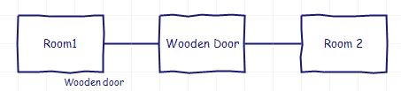

Doors
Doors are modeled as an object that exists between two rooms.
1. Create a new object
2. Check its door check box.
3. Connect it to two rooms
4. Set its parent to the room where you want the door to appear.

Making a door that appears in 2 rooms.
(This would be like the kitchen window in Zork, which you can open or close the window from either the kitchen or from behind the house).
This can be achieved using an Event to place the door in the player's current location.
if (player.holder == room1)
{
wooden door.holder = room1;
}
else if (player.holder == room2)
{
wooden door.holder = room2;
}
Back to Table of Contents